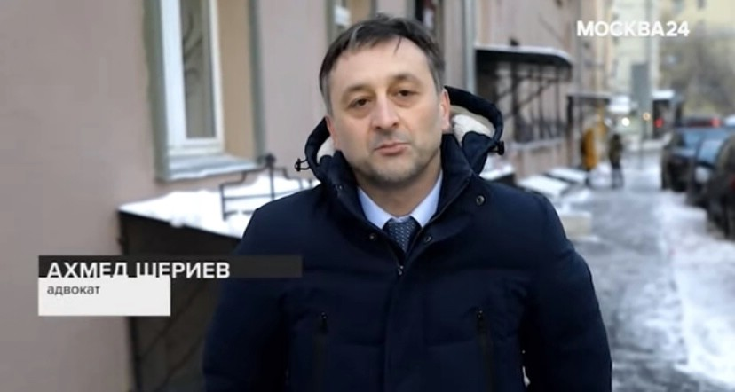

К адвокату обратились со следующей ситуацией:
"О. с темя детьми (дочь 18 лет слабослышащая, сын 17 лет, сын 5 лет с заболеванием аутизм) переехала в Москву из-за необходимости лечения детей. Купила комнату в 5-комнатной коммунальной квартире в 2020 году за 1 мл р. у А., который владел 2 комнатами. Вторую он продал некому Д., еще до О. У соседки М. с мужем в собственности 2 комнаты. Еще одна комната пустая, жила бабушка, после смерти комната принадлежит государству как выморочная. М. предлагает выкупить её 2 комнаты за 12 миллионов. Но О. не имеет возможности.
Д. подал в суд на О. и оспорил покупку ею комнаты, т.к. имел право первоочередной покупки. Суд уже выселили О. с детьми, но она подала апелляцию. Цель Д. – выкупить все комнаты. М. уже готова продать ему свои две комнаты. О. отказывается продавать и выселяться, поэтому М. будучи в сговоре с К., пытаются её выжить своим поведением.
Соседи по коммуналке провоцируют драки, ссоры, разводят грязь и мусор, муж М. ходит полуголым при детях".
Вопросы:
На каком основании Д. подал в суд на О.?
Есть ли у него право первоочередного выкупа?
Может ли О. оспорить судебное решение?
Кто может претендовать на комнату умершей бабушки?
Лезут драться, устраивают грязь, муж ходит полуголым при детях, как быть?
Рекомендации адвоката.
Основанием иска Д. является преимущественное право покупки доли в имуществе, регламентированное ст. 250 ГК РФ - При продаже доли в праве общей собственности постороннему лицу остальные участники долевой собственности имеют преимущественное право покупки продаваемой доли по цене, за которую она продается, и на прочих равных условиях.
Продавец доли обязан известить в письменной форме остальных участников долевой собственности о намерении продать свою долю постороннему лицу с указанием цены и других условий, на которых продает ее.
Поскольку на момент продажи комнаты О., Д. уже являлся собственником, то он имел право покупки комнаты наравне с О.
И тут стоит вопрос о надлежащем его уведомлении при продаже комнаты бывшим собственником (А.)
Полагаю, что решение суда первой инстанции было обоснованным и законным. Обстоятельство отмены решения суда в апелляции нужно изучать путем ознакомления с определением Мосгорсуда.
Ольга, конечно же имеет возможность и шанс на обжалования апелляционного определения суда в кассационном порядке в течении 3-х месяцев.
Без изучения определения, однако, вижу следующие основания для обжалования.
- Судом апелл-ой инстанции не обоснованно восстановлен срок исковой давностидля требования о переводе прав на преимущественную покупку.
Закон говорит о том, что при продаже доли с нарушением преимущественного права покупки любой другой участник долевой собственности имеет право в течение трех месяцев требовать в судебном порядке перевода на него прав и обязанностей покупателя.
Истец же обратился в суд задолго после приобретения О. комнаты.
(Согласно пункту 1 статьи 200 данного кодекса, если законом не установлено иное, течение срока исковой давности начинается со дня, когда лицо узнало или должно было узнать о нарушении своего права и о том, кто является надлежащим ответчиком по иску о защите этого права.
Из разъяснений, содержащихся в пункте 14 постановления Пленума Верховного Суда Российской Федерации и Пленума Высшего Арбитражного Суда Российской Федерации от 29 апреля 2010 г. N 10/22 "О некоторых вопросах, возникающих в судебной практике при разрешении споров, связанных с защитой права собственности и других вещных прав", следует, что по смыслу пункта 3 статьи 250 Гражданского кодекса Российской Федерации при продаже доли в праве общей собственности с нарушением преимущественного права покупки других участников долевой собственности любой участник долевой собственности имеет право в течение трех месяцев со дня, когда ему стало известно или должно было стать известно о совершении сделки, требовать в судебном порядке перевода на него прав и обязанностей покупателя.)
-Из решения суда не видно, что истец просил о восстановлении срока. Суд же апелляционной инстанции вошел в обсуждение обстоятельства восстановления срока и восстановил его, выйдя за пределы рассмотрения жалобы.
(Согласно статье 327.1 Гражданского процессуального кодекса Российской Федерации суд апелляционной инстанции рассматривает дело в пределах доводов, изложенных в апелляционных жалобе, представлении и возражениях относительно жалобы, представления (часть 1).
В случае, если в порядке апелляционного производства обжалуется только часть решения, суд апелляционной инстанции проверяет законность и обоснованность решения только в обжалуемой части (часть 2).)
-Кроме того, не ясно почему суд решил, что Истец доказал наличие возможности у него на приобретение комнаты. Истец не зачислил на депозит суда денежные средства в подтверждение этого. Предъявляя иск о переводе прав и обязанностей покупателя в связи с нарушением преимущественного права покупки, истец обязан доказать свою платежеспособность
(Определение Верховного Суда РФ от 20.10.2015 N 18-КГ15-150 (Судебная коллегия по гражданским делам. )В нарушение положений ст. ст. 56, 57 ГПК РФ суд удовлетворил иск, не предложив истцу представить доказательства того, что у него есть денежные средства, необходимые для оплаты долей в праве собственности на земельный участок, и безмотивно отклонив ходатайство представителя ответчика о предоставлении доказательств платежеспособности истца. В то же время суд удовлетворил ходатайство последнего о предоставлении рассрочки по уплате государственной пошлины при подаче иска ввиду его затруднительного материального положения. Между тем, переводя права и обязанности покупателя по договорам купли-продажи земельных долей и признавая, что право собственности на эти доли возникнет после выплаты денежных средств покупателям, суд фактически поставил исполнение решения в зависимость от платежеспособности истца.
См. также:Определение Верховного Суда РФ от 19.11.2013 N 5-КГ13-109)
Комната умершей бабушки при отсутствии лиц, являющихся наследниками умершей, считается, так называемой, выморочной, то есть переходить в собственность государства.
Указанная комната, так же, как и все остальные, надлежит продаже с соблюдением преимущественных прав на покупку другими участниками общей собственности.
Комната может быть предложена любому из сособственников коммунальной квартиры для приобретения.
Если в процессе совместного пользования или проживания в коммунальной квартире происходят конфликты и ссоры, то необходимо обращаться в полицию и фиксировать все события. Если происходят «драки» то виновное лицо может быть привлечено к уголовной ответственности по ст. 115, 116, 113, 119 и др. в зависимости от содеянного и наличия состава.
Если происходит захламление мест общего пользования, мешают проживать и прочее, то любой собственник может требовать устранения препятствий в пользовании своим имуществом путем учинения иска в суд, либо определении порядка пользования помещениями и местами общего пользования.
Что касается исполнения решения суда о выселении на стадии кассационного обжалования. О. может в своей жалобе просить кассационный суд о приостановлении исполнения решение суда о выселении до рассмотрения кассационной жалобы по существу. Для этого составляется ходатайство и оно приобщается к кассационной жалобе.
Кроме того, можно попросить суд первой инстанции об отсрочке исполнения решения суда о выселении в связи с особыми обстоятельствами. Отсрочить, значит на время. Мотивировать это можно тем, что в зимний период достаточно сложно выехать из комнаты и некуда. При наличии троих детей, двое из которых инвалиды, это не гуманно и не исполнимо.
Вопрос относительно возврата денежных средств от продавца комнаты.
Если же решение суда все же не удастся обжаловать, то О. имеет право истребовать денежные средства у продавца квартиры, который допустил нарушение прав преимущественной покупки помещения. Здесь можно требовать индексации и возмещения убытков.
Жилищный адвокат
8 (925) 502-40-09
Напишите нам на WhatsApp
Квалифицированная помощь жилищного адвоката ...
- Прекращение права пользования жилым помещением
- Заявление о расторжении брака
- Иск о разделе долей между супругами